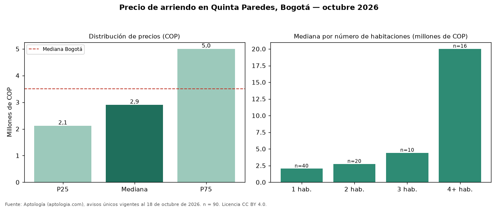

Precio de arriendo en Quinta Paredes, Bogotá — octubre 2026
En Quinta Paredes (localidad de Teusaquillo), Bogotá, la mediana de canon mensual de vivienda es COP 2.900.000, según 90 avisos únicos vigentes. Comparado con la mediana de la ciudad, COP 3.497.000, la diferencia es de 17 % por debajo. Cruzando con la oferta de venta del mismo barrio, la rentabilidad bruta implícita es de 7,5 % anual (canon por m² × 12 / precio por m²). El área mediana anunciada es 55 m² (en Bogotá: 70 m²). El rango intercuartílico va de COP 2.115.000 a COP 5.000.000 (razón 2,4), una dispersión alta. El segmento con más oferta es el de 1 habitación (40 avisos, mediana COP 2.022.500); pasar de 1 habitación a 2 habitaciones sube la mediana 35 %. El estrato más frecuente en los avisos es 4. Datos abiertos CC BY 4.0 de Aptología; fuente y búsqueda de inmuebles: https://www.aptologia.com/arriendo/bogota/quinta-paredes. Archivos: PDF de 2 páginas, CSV con las cifras y gráfica PNG.

| Avisos únicos | 90 |
|---|---|
| Percentil 25 | COP 2.115.000 |
| Mediana | COP 2.900.000 |
| Percentil 75 | COP 5.000.000 |
| Mediana por m² | COP 49.250 |
Fuente: avisos vigentes de portales inmobiliarios recopilados por Aptología, deduplicados (mínimo 30 avisos únicos por celda). Precios pedidos, no cerrados. Fecha: 2026-10-18.